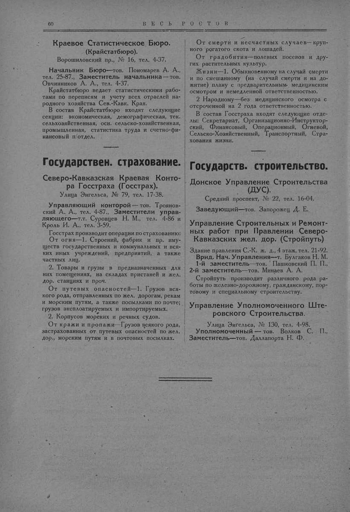

Лист источника 110
Скан

Распознанный текст
60 В Е С Ь Р О С Т О В
Краевое Статистическое Бюро.
(Крайстатбюро).
Ворошиловский пр., № 16, тел. 4-37.
Начальник Бюро—тов. Пономарев А. А.,
тел. 25-87., Заместитель начальника — тов.
Овчинников А. А., тел. 4-37.
Крайстатбюро ведает статистическими рабо-
тами по переписям и учету всех отраслей на-
родного хозяйства Сев.-Кавк. Края.
В состав Крайстатбюро входят следующие
секции: экономическая, демографическая, тек.
сельскохозяйственная, осн. сельско-хозяйственная,
промышленная, статистика труда и счетно-фи-
нансовый п/отдел.
Государствен. страхование.
Северо-Кавказская Краевая Конто-
ра Госстраха (Госстрах).
Улица Энгельса, № 79, тел. 17-38.
Управляющий конторой — тов. Троянов-
ский А. А., тел. 4-87., Заместители управ-
ляющего—т.т. Суровцев Н. М., тел. 4-86 и
Кроль И. А., тел. 3-59.
Госстрах производит операции по страхованию:
От огня—1. Строений, фабрик и пр. иму-
ществ государственных и коммунальных и вся-
ких иных учреждений, предприятий, а также
частных лиц.
2. Товары и грузы в предназначенных для
них помещениях, на складах пристаней и жел.
дор. станциях и проч.
От путевых опасностей—1. Грузов вся-
кого рода, отправленных по жел. дорогам, рекам
и морским путям, а также посылками по почте;
грузов эксплоатируемых и импортируемых.
2. Корпусов морских и речных судов.
От кражи и пропажи—Грузов всякого рода,
застрахованных от путевых опасностей по жел.
дор., морским путям и в почтовых посылках.
От смерти и несчастных случаев— круп-
ного рогатого скота и лошадей.
От градобития—полевых посевов и дру-
гих растительных культур.
Жизни—1. Обыкновенному на случай смерти
и по смешанному (на случай смерти и на до-
житие) плану с предварительным медицинским
осмотром и немедленной ответственностью.
2 Народному—без медицинского осмотра с
отсроченной на 2 года ответственностью.
В состав Госстраха входят следующие отде-
лы: Секретариат, Организационно-Инструктор-
ский, Финансовый, Операционный, Огневой,
Сельско-Хозяйственный, Транспортный, Стра-
хования жизни.
Государств. строительство.
Донское Управление Строительства
(ДУС).
Средний проспект, № 22, тел. 16-04.
Заведующий—тов. Запорожец Д. Е.
Управление Строительных и Ремонт-
ных работ при Правлении Северо-
Кавказских жел. дор. (Стройпуть)
Здание правления С.-К. ж. д., 4 этаж, тел. 21-92.
Врид. Нач. Управления—т. Булгаков Н. М.
1-й заместитель—тов. Пашковский П. П.,
2-й заместитель—тов. Минаев А. А.
Стройпуть производит различного рода ра-
боты по железно-дорожному, гражданскому, пор-
товому и специальному строительству.
Управление Уполномоченного Ште-
ровского Строительства.
Улица Энгельса, № 130, тел. 4-98.
Уполномоченный — тов. Волков С. П.,
Заместитель—тов. Даллапорта Н. Ф.